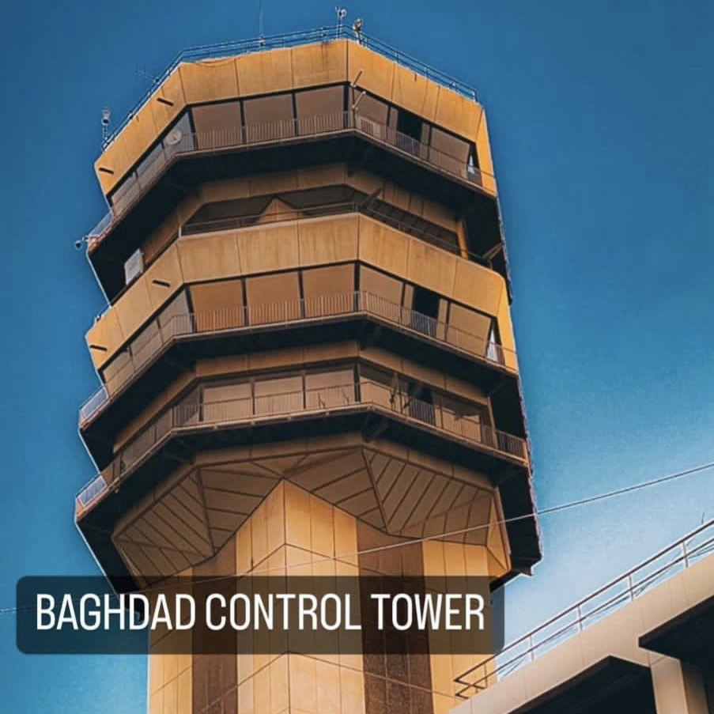

لائحة الشرف للمهندسين المبدعين الدفعة التاسعة
المهندس : محمد قيس عبد الكافي
المهندس : محمد عبد القادر
المهندس : علي حيدر اموري
المهندس : حسين جواد كاظم
المهندس : عبد الحميد ثامر
المهندس : عبدالله ليث جاسم
المهندس : حسنين قحطان كاظم
المهندس :حيدر احمد راضي
لوحة خاصة بتعليقات الطلاب
نبذة عن هندسة الملاحة
مراقبة جوية
المراقبة الجوية هي تنظيم حركة الطائرات في التنقل والحركة، والسير متجاورين أو متعامدين فيما بينهما بمسافة قد تبعد بكثير أو تقترب بدرجة متقاربة بقليل دون أن تلامس بعضها، إلاّ من خلال ذلك الاقتراب الجغرافي في حدود الزمان والمكان، وامداد يد العون والمساعدة في حالات الطوارئ بمساندة الجهات المعنية. إن الحركة الملاحية لم تكن في بدايات عهد الطيران بكثافة ما نشهده اليوم من ازدحام في الأجواء، فقد كانت وقتها إجراءات عمليات الطيران تتم من قبل قائد الطائرة والمتنبئ بالأحوال الجوية، ولكن مع تطور السفر جواً في بداية العشرينات برزت الحاجة ملحة إلى تنظيم تلك الحركة الجوية من قبل جهة موحدة؛ مما استدعى التفكير في مهنة "المراقبة الجوية"، والتي بدأ معها ظهور كادر لا يقل عن الطيارين أهمية، وهم "المراقبون الجويون" والذين يقع على عاتقهم تنظيم حركة الطائرات على الأرض وفي السماء لمنع حدوث أي تصادم. و قد تم تحديده
اقسام المراقبة الجوية
1. مراقب الانطلاق Delivery control (DEL).
2. مراقب الأرضية Ground control (GND)
3.برج المراقبة Aerodrome control tower
4. مراقبة الاقتراب Approach control unit
5. مراقبة المنطقة Area control center
هندسة الملاحة والتوجيه من التخصصات النادرة في العراق والعالم ويعد اول فرع يختص بدراسة هندسة الملاحة والتوجيه في العراق. ومجالات العمل ضمن هذا الاختصاص هي:
• وزارة الدفاع بكافة صنوفها.
• وزارة النقل والمواصلات
• وزارة الزراعة
• وزارة النفط
• وزارة الداخلية
• الارصاد الجوية
• وزارة الكهرباء
• وزارة الشباب والرياضة
• وزارة الاسكان والاعمار. وغيرها من الوزارات والقطاعات الخاصة الاخرى.
